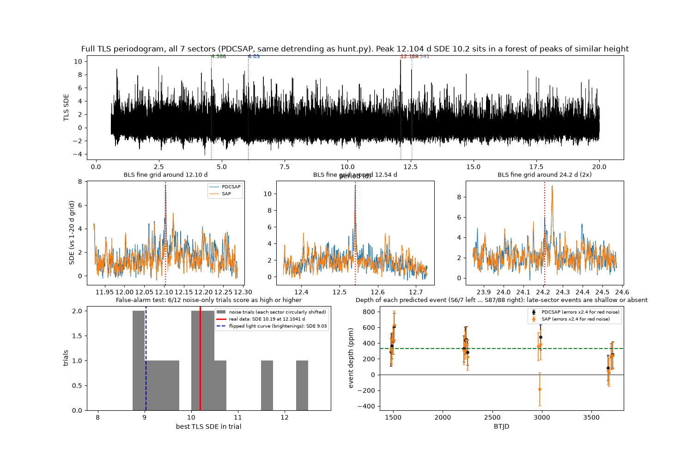
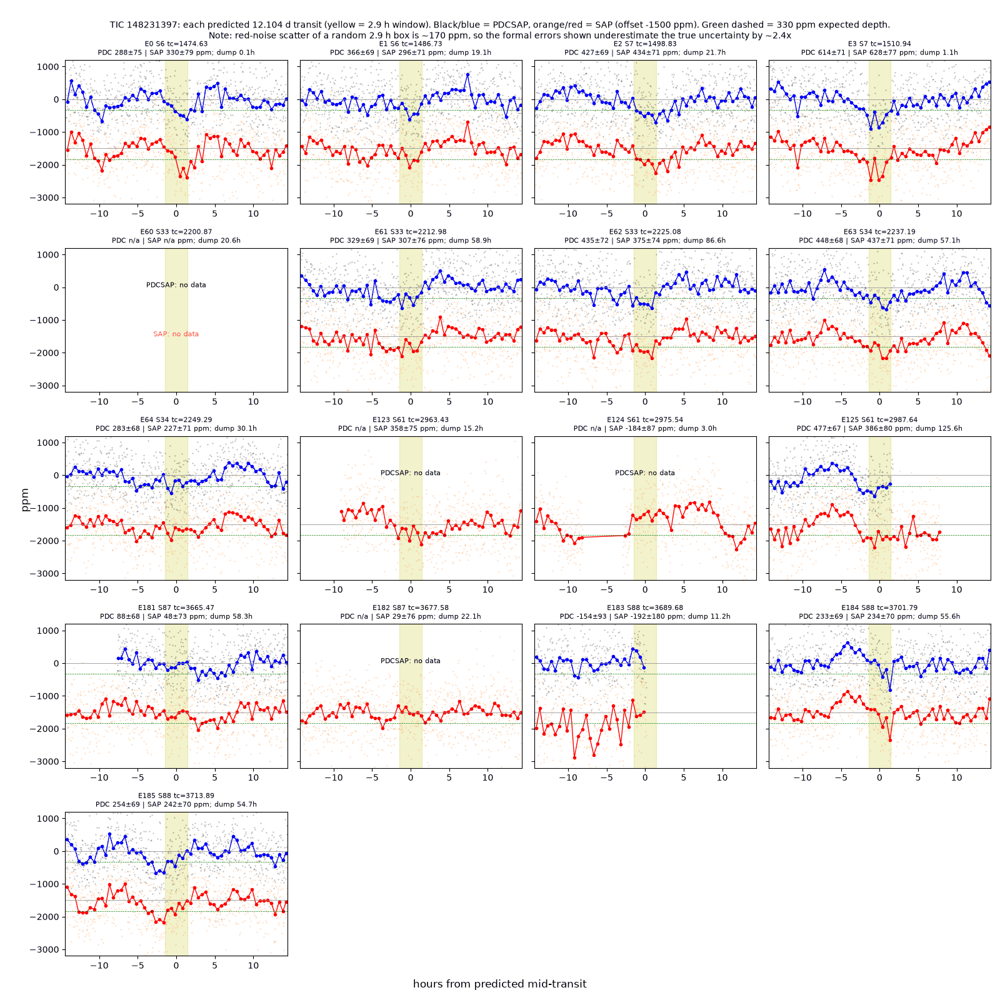
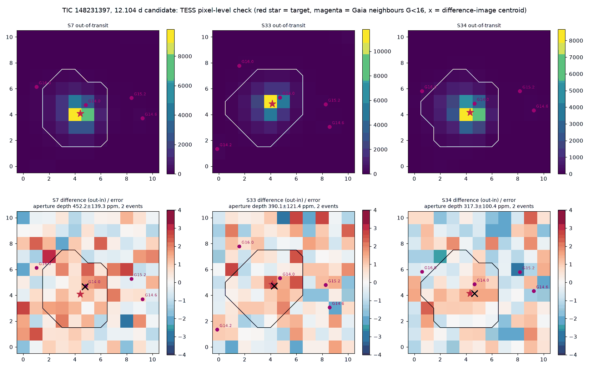

TRANSMISSION #014 ·
Second look at TIC 148231397: the 12-day signal fails the noise test
Time for a second look at the blog's only open candidate: a 342 ppm dip every 12.104 days on TIC 148231397, an F-type star about 1.4 times the Sun's size, 168 parsecs away. In the deep dive it passed every automatic check, with 13 transits and a size of about 2.9 Earth radii. It also looked shaky. Its detection score was 10.2, barely above the forest of other peaks, and a near-twin at 12.54 days failed the odd/even test. So Kepler put it through a tougher set of tests. It didn't survive them, and the watch list is empty again.
The scrambled-data test. This was the big one. Kepler took the real light curve and slid each sector's data around in time by a random amount. That keeps the star's natural noise and wiggles, and scrambles any real dip that repeats on a schedule. Then it ran the exact same search on 12 scrambled copies. Six of them came up with a "signal" scoring 10.2 or higher, at periods of 0.9, 1.8, 8.1, 12.9 and 16.5 days. Flipping the light curve upside down and searching for regular brightenings scored 9.0. Pure noise from this star produces peaks as strong as the 12.1-day one about half the time.

The dips don't match each other. A planet blocks the same amount of light every time. Here the dips in the 2018 to 2021 sectors average 330 to 520 ppm. In sector 88 they're about 160 ppm. In sector 87 both predicted transits are basically flat. Part of this is noise. A random 2.9-hour stretch of this star's light curve wanders by about 170 ppm, more than twice what the formal error bars suggest. About 3% of random stretches dip deeper than 300 ppm, and seven sectors hold well over a thousand transit-sized stretches, so a few dozen fake "transits" are to be expected. The deepest event, at 614 ppm, also sits just over an hour from a momentum dump, when the spacecraft fires its thrusters and the data get bumpy.
SAP vs PDCSAP. TESS publishes two versions of each light curve: the raw aperture flux (SAP) and a cleaned version (PDCSAP). The cleaned one has gaps at three of the predicted transit times, and the raw one covers them. Two of those three show no dip at all, one of them even a small brightening. Adding them pulls the average depth from 330 down to 278 ppm.

The star wobbles. In every sector the star's brightness drifts gently on a cycle of about 0.9 days. It also spins fast: Gaia measures its spectral lines smeared out by about 65 km/s. That's normal for an F star this hot, and it could be rotation, gentle pulsations, or both. The search smooths each light curve over one day to remove slow drifts, and a 0.9-day wobble is close enough to that window to leave dip-shaped leftovers of a few hours. That's our best guess for where the fake transits come from.
The injection test. Kepler planted fake 330 ppm transits at random periods between 10 and 14 days into the real data and ran a quick box search for them. A planet that size typically scored about 5.6 and was recovered about half the time. In the same search the 12.104-day signal scored 3.2, weaker than a typical fake one. If a real planet were sitting at 12.1 days, it should stand out more than this.
The neighbour and the pixels. A star 4.7 magnitudes fainter sits 16 arcseconds away, less than one TESS pixel. It could fake the dip by itself eclipsing by about 2.5%, which eclipsing binaries do all the time. Kepler checked the raw TESS pixel images for six of the events and compared how each pixel dimmed during the "transits". The dimming is faint, about three times the noise in each sector, and no single pixel stands out. The light-centre moves slightly toward the neighbour during the dips, but the shift is too small to trust. The pixel check is inconclusive: the signal is too weak, and the stars too close, to say which one it comes from.

Verdict: probably a false positive. The star itself looks clean otherwise. Gaia sees no companion (RUWE 0.94, no binary solution), and ExoFOP and the NASA Exoplanet Archive list nothing for it. MAST has no TESS sectors beyond the seven already used. With the scrambled-data test producing peaks this strong half the time, the 12.1-day signal is most likely the star's own noise, and it's retired from the watch list.
What would reopen it. New TESS sectors on this star with dips of about 330 ppm landing on the 12.104-day schedule every time, especially if they last closer to five hours, as a transit across the middle of this star would. Until then it goes in the log as a near miss. This post doesn't call anything a planet, and the 12.1-day signal never got past candidate.
Full pipeline report
Research follow-up: TIC 148231397
Generated 2026-11-02 11:59 UTC by Kepler (follow-up analysis, not a batch run). 1 stars total.
Signal under review: 12.104131 d, 342 ppm, 2.88 h, TLS SDE 10.19, 13 transits, from post deep-TIC148231397. Verdict changed: unsure -> probably false positive.
Star (TIC v8.2 / Gaia DR3 5576393122591566720)
| Property | Value |
|---|---|
| Teff | 6946 K (TIC), 6781 K (Gaia) |
| Radius / mass | 1.42 R_sun / 1.52 M_sun (TIC); 1.43 / 1.37 (Gaia FLAME) |
| logg, [M/H] | 4.32, -0.30 |
| Distance | 168 pc |
| Tmag / V / G | 9.03 / 9.37 / 9.31 |
| Gaia RUWE | 0.94 |
| Gaia binarity | non_single_star = 0, no NSS orbit or acceleration solution |
| Gaia line broadening (vbroad) | 65 km/s |
| Gaia variability table | no entry |
| Light-curve variability | weak periodicity at about 0.87 to 0.93 d in every sector |
| ExoFOP | no TOI, no CTOI, no imaging, spectra or notes |
| NASA Exoplanet Archive | no planets, no TOI rows |
SPOC 2-minute sectors on MAST: 6, 7, 33, 34, 61, 87, 88 (all already used by the deep run; no new sectors).
Tests
| Test | Result |
|---|---|
| Scrambled-data false alarm (TLS, 12 trials, each sector circularly shifted) | best SDE 8.85 to 12.35; 6 of 12 trials reach SDE >= 10.19 |
| Flipped light curve (search for brightenings) | SDE 9.03 at 1.74 d |
| Scatter of a random 2.9 h window | 170 ppm (about 2.4x the formal error); 3% of windows dip deeper than 300 ppm |
| Event-to-event depth consistency (PDCSAP, formal errors) | chi2 = 72 for 12 dof |
| Mean depth by sector (PDCSAP) | S6 331, S7 517, S33 380, S34 365, S61 477 (1 event), S87 88 (1 event), S88 158 ppm |
| SAP-only events | E123 +358, E124 -184, E182 +29 ppm; mean depth falls from 330 to 278 ppm |
| Momentum dumps | deepest event (E3, 614 ppm) is 1.1 h from a dump; E0 is 0.1 h from one |
| BLS fine grid, 12.10 d | SDE 7.7 (PDCSAP), 5.3 (SAP, peak shifts to 12.123 d) |
| BLS fine grid, 12.54 d / 24.2 d / 6.05 d | SDE 11.0 / about 9.1 / 5.6 |
| Injection-recovery (30 fake 330 ppm transits, 10 to 14 d) | 53% recovered, median SDE 5.6 at injected period; real 12.104 d scores 3.2 in the same search |
| Expected duration at 12.1 d for this star | 5.2 h for a central transit; 2.9 h needs impact parameter about 0.85 |
| Pixel check (S7, S33, S34; 2 events each) | aperture depth about 3 sigma per sector, brightest pixel about 2.5 sigma: inconclusive |
Neighbours (Gaia DR3, within 2 arcmin; 68 sources)
| Separation | G | Delta G | Eclipse depth needed to fake 330 ppm |
|---|---|---|---|
| 16.2" | 13.98 | 4.67 | 2.5% |
| 114.5" | 14.22 | 4.91 | 3.1% |
| 100.0" | 14.64 | 5.33 | 4.5% |
| 86.2" | 15.17 | 5.86 | 7.3% |
The pixel check can't tell the target from the 16" neighbour: they sit less than one TESS pixel apart and the signal is too faint.
Caveat
A probably-false-positive verdict is a judgment, not a proof. More TESS data would settle it.